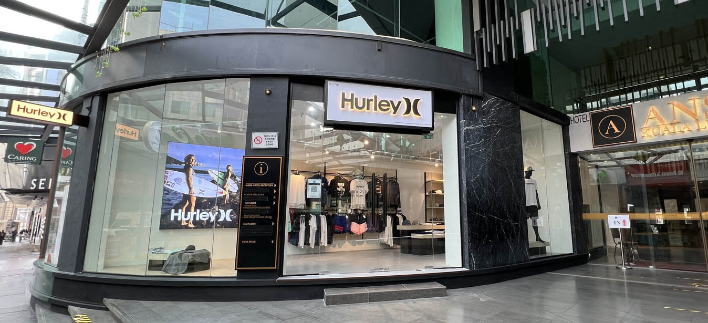
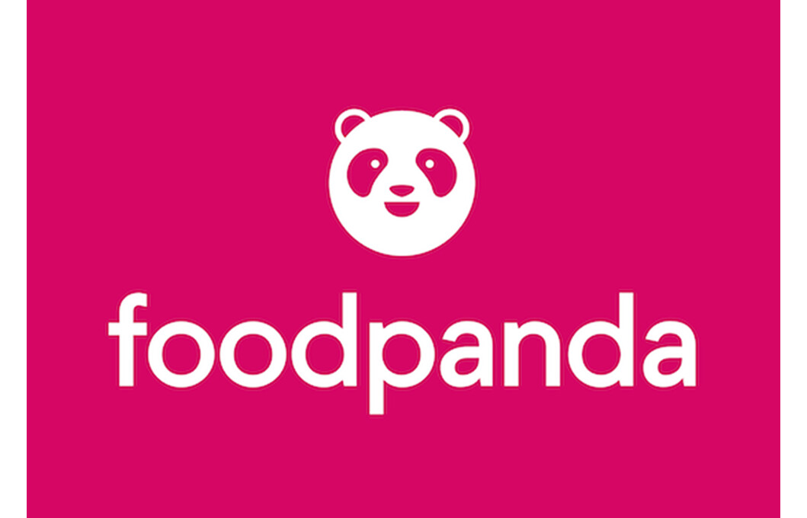
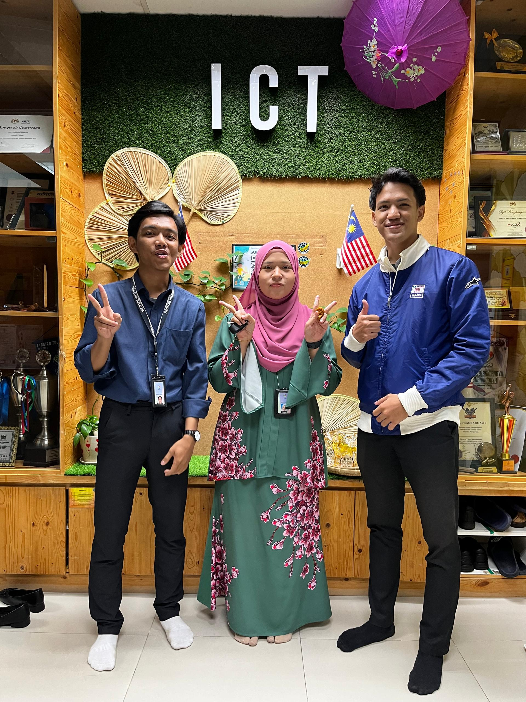

Professional Experience
SALESMAN
Company: HURLEY, Sunway Pyramid, Subang Jaya
Duration: 5 Months after finishing my SPM in 2022
This job is very fun and enjoyable. My personal achievement is managing to attract customers to buy clothes in the store. As a result of the effort, I will receive a small wage from the employer. This workplace is also close to home, so I can save money on commuting and have lunch at home.
FOOD DELIVERY
Company: FOOD PANDA, Area Subang Jaya, Bukit Jelutong, Puchong, and Kuala Lumpur
Duration: 1/2 Month (Sem Break)
Efficiently assigning delivery partners to orders to minimize delivery times. Timely deliveries ensure that food is delivered fresh and within the promised time frame.
Internship
Company: MAJLIS BANDARAYA SUBANG JAYA (MBSJ), Subang Jaya
Duration: 8 Weeks (2 Months)
I have been placed in the Information Technology (ICT) office and under the Data Center unit.